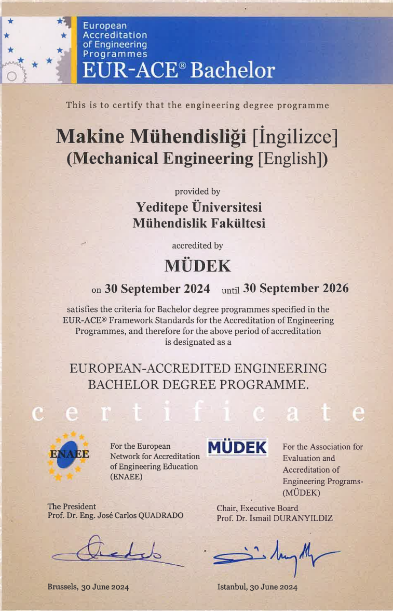
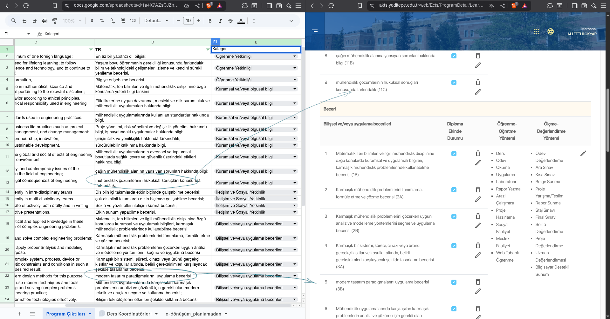
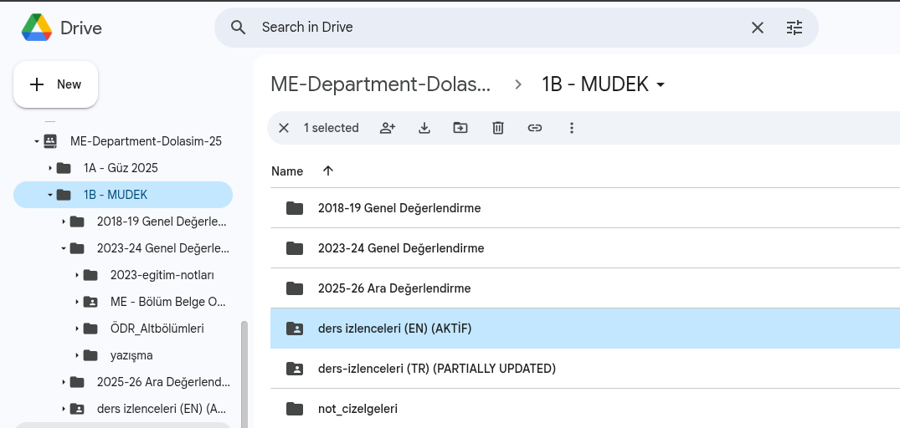
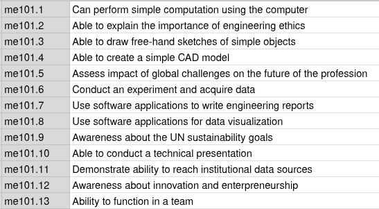
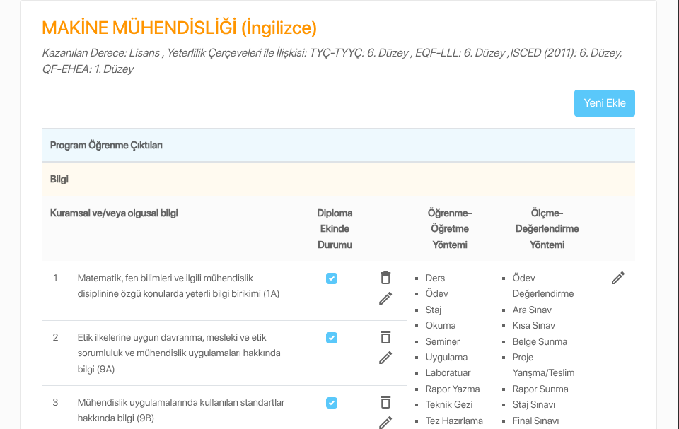

AKTS Bilgi Paketi ve Ders Kataloğu Sistemi
Makine Mühendisliği Özelinde Pilot Çalışma
2025-09-30
1. Lisans Programı Kalite Unsurları
- “Avrupa Yükseköğretim Alanı Standartları” ile uyumlu eğitim yaklaşımımızı güçlendirme, şeffaflık ve öğrenci hareketliliğimizi daha da artırma hedefimiz doğrultusunda, Avrupa Kredi Transfer ve Biriktirme Sistemi (AKTS) çerçevesindeki çalışmalarımızı başarıyla yürütmekteyiz.
- Bu kapsamda, yeni AKTS Bilgi Paketi ve Ders Kataloğu sistemini hayata geçirmemizin heyecanını yaşıyoruz.
- https://akts.yeditepe.edu.tr
1.1. Lisans Programı Akreditasyonu
Makine Mühendisliği lisans programı MÜDEK akreditasyon çerçevesinde kalite güvencesi altına alınmıştır.

1.2. Genel Tanımlar
- Değerlendirme Ölçütleri
- Eğitim Amaçları
- Program Çıktıları (Student Outcomes)
- Ders İzlencesi (Dersin Bologna Formu)
- Ders Öğrenim Çıktıları
2. Program Çıktıları (PÇler)
- Bir lisans programında bulunan zorunlu derslerin PÇ’ler ile ilişkilerini gösterir Tablo-1 (MMB mudekMatrisi).
- Tablo şart değildir ancak süreç yönetimi ve sürdürebilirlik açılarından faydalı uygulamadır.
2.1. PÇ Veri Girişi
Programların bilgi girişi için hazırlanan Tablo-2 (ME AKTS İZLENCE GİRİŞLERİ) ile AKTS portalına giriş ekranı arasındaki veri akışı.

2.2. Simülasyon 1: PÇ Girişi
- PÇ’ler AKTS portaldaki kategorilere göre ayırılmıştır.
- Girişi yapacak olan iki yetkili bulunmaktadır.
- Bölüm Kalite Güvence Yetkilisi (Bölüm Başkanı)
- Bölüm Kalite Koordinatörü
- Bu kişilerin haricinde geçici veri girişi yapacak personel mailto:ybehlevan.yeditepe.edu.tr ye bildirilir.
- Öğrenci Bilgi Sistemi’nde (OBS) bulunan veriler ile uyumluluk kontrolü yapılır.
2.3. Eğitim Amaçları Veri Girişi
- Lisans programına ait eğitim amaçları girilir.
- Ayrıca Eğitim Amaçları/PÇ İlişkilendirme Matrisi doldurulur.
- Her bir PÇ için eğitim amaçlarına hizmet/katkı/ilişkisini gösteren bir işaretleme yapılır.
- İşaretlemenin var/yok şeklinde yapılması için 0 ya da 1 seçeneği işaretlenir.
- var/yok ya da 0/1 yöntemi atama ve kontrolde kolaylık sağlar.
3. Ders İzlenceleri
3.1. Bologna Ders Formları (BDF)
- Öğretim üyelerinin dersin başında kullanıdıkları izlence ile birebir aynı olmasa da, ders ile ilgili tüm teknik detayları bulunduran formdur. Bu çerçevede ders izlencesi ile eş anlamlı olarak kullanılmıştır.
- Örnek bir ders izlencesi: ME 101 Introduction to Mechanical Engineering
3.2. İzlencelerin Takibi

- İzlencelerin AKTS portalına girilmesi öncesinde en son sürümlerinin toplanması gereklidir.
- Bölümde izlencelerin tek ve en son sürümlerinin tutulduğu ve erişilebildiği bir Google Paylaşım klasörü oluşturmak faydalı uygulama olarak görülebilir.
- İzlencede zaman içerisinde meydana gelen değişikliklerin takibinde Google sürüm yöneticisi kullanımı bir başka faydalı uygulama olarak görülebilir.
3.3. Ders Planı
- Lisans programlarının ders programları portala aktarılırken OBS (ya da bilinen eski adıyla e-dönüşüm) sisteminde veri akışı sağlanmıştır.
- Örnek bir ders planı: Makine Mühendisliği Lisans Programı
3.4. İzlence Veri Girişi
Programda yer alan ders izlencelerinin veri girişi Bölüm yetkilileri tarafından yapılır.

3.4.1. Ders Öğrenim Çıktıları (DÖÇ)

- Her bir dersin kendine ait öğrenim çıktıları, kısa ve öz, mümkünse PÇ’ler ile birebir ilişki içerisinde tanımlanır.
- Öğrenim çıktılarının yazımı ile ilgili gerekli ve yeterli teknik bilgi için: YULEARNT-Eğiticilerin Eğitimi (TEACH101.2)
3.4.2. DÖÇ/PÇ İlişkilendirme Matrisi
- Dersin öğrenim çıktıları ile program çıktıları arasındaki bağlantılar ilgili matriste işaretlenir.
- İşaretlemenin var/yok şeklinde olması için 0 ya da 1 seçeneği işaretlenir.
- var/yok yani 0/1 yöntemi atama ve kontrolde kolaylık sağlar.
Soru/Cevap
Geliştirmeye Açık Unsurlar
PÇ giriş diyaloğunda öğretme ve değerlendirme yöntemlerinin elle işaretlenmesi yerine, bu bilginin sistem tarafından PÇ’ye hizmet eden derslerden toplanması olası hatalı girişlerin önüne geçer.
